NOWZ 시작하기
회원가입
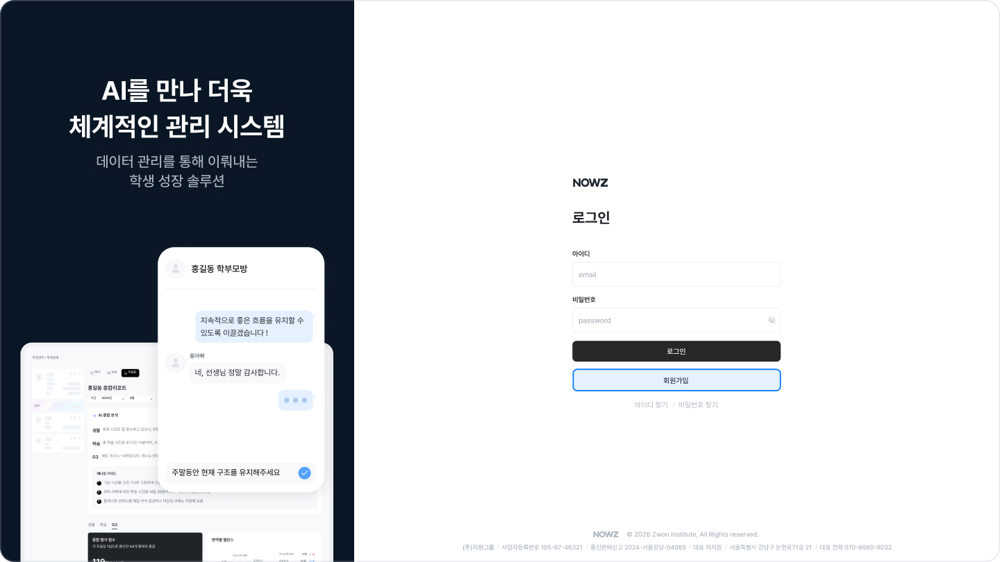
NOWZ는 아래 로그인 화면에서 시작합니다. 처음 합류하는 방법은 두 가지이며, 누가 먼저 시작하느냐에 따라 갈립니다. 내 상황에 맞는 쪽을 따라가면 됩니다.
관리자가 내 정보를 먼저 등록하는 경우 — 등록된 휴대폰 번호로 가입 링크가 문자로 발송됩니다.
- 문자로 받은 가입 링크를 엽니다.
- 안내에 따라 비밀번호를 설정하고 정보를 확인합니다.
- 가입을 완료하면 워크스페이스에 자동으로 합류됩니다.
내가 먼저 가입하는 경우 — 위 로그인 화면 하단의 [회원가입] 버튼으로 시작합니다.
- NOWZ에서 회원가입을 완료합니다.
- 가입에 사용한 이메일 또는 휴대폰 번호를 관리자에게 전달합니다.
- 관리자가 연동하면 워크스페이스에 합류됩니다.
약관 동의 후 가입
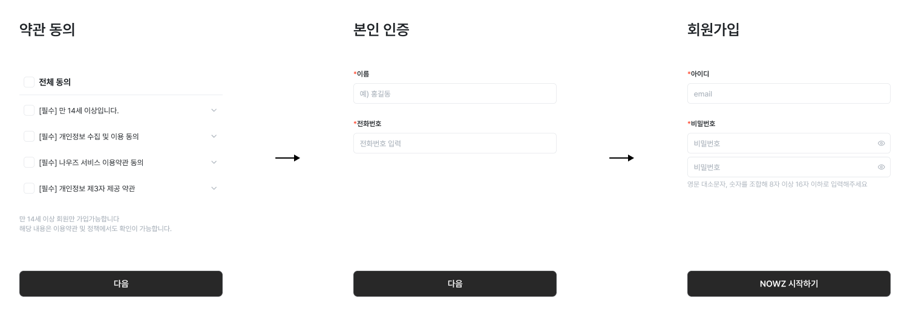
약관 동의를 완료한 후 사용자 정보(이름, 비밀번호, 휴대폰 번호)의 입력을 완료합니다. 약관의 내용은 꼭 확인해 주세요!
NOWZ 시작하기
우리 워크스페이스에서 NOWZ를 함께 쓰는 사람(매니저·선생님 등)을 등록하고, 정보를 입력하고, 가입 상태를 확인하는 곳입니다.
구성원 등록
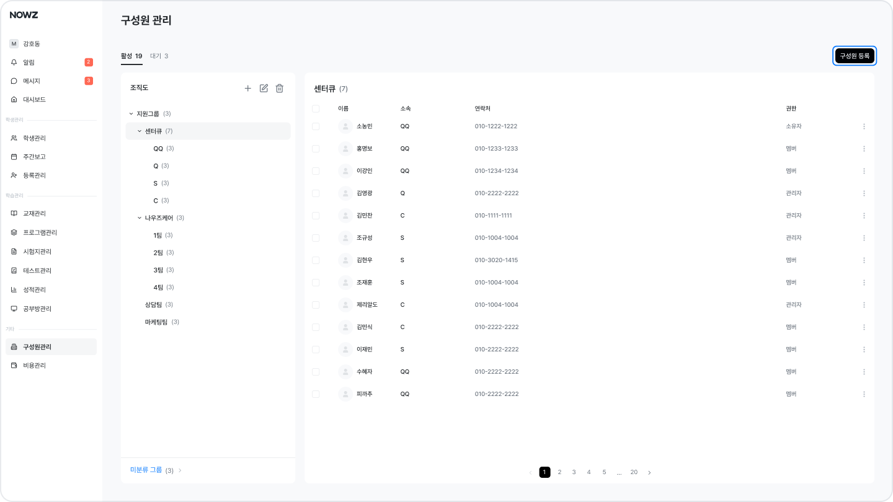
1. 우측 상단의 구성원 등록 버튼을 눌러 새로운 구성원의 정보를 입력합니다.
구성원 정보 입력
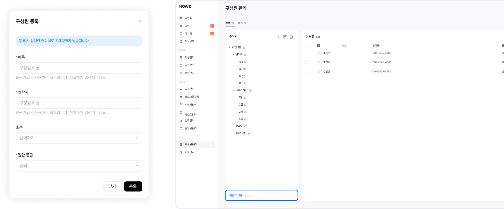
2. 필수 입력 사항인 이름·연락처·권한 등급을 입력하여 구성원 등록을 완료해 주세요.
참고소속을 입력하지 않으면 미분류 그룹으로 배정되며, 업무 환경이 일부 제한될 수 있습니다.
구성원 상태 확인
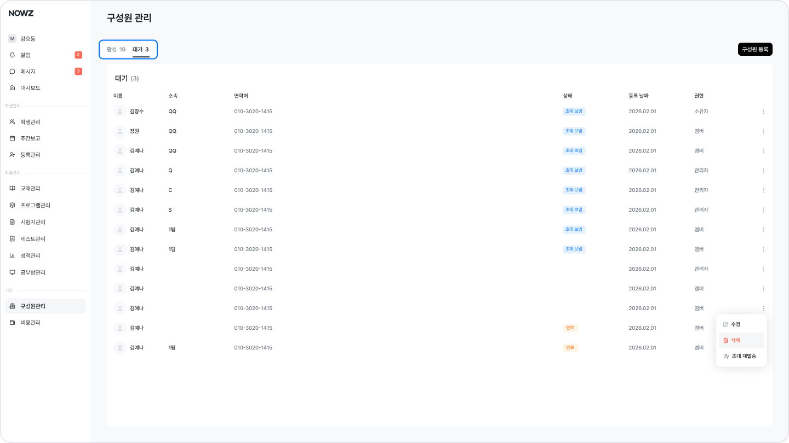
3. 구성원으로 등록한 경우 대기 탭에서 실시간으로 확인할 수 있고, 구성원이 회원가입을 완료하면 활성 탭에서 확인할 수 있습니다.
참고각 구성원 행 오른쪽의 ⋮ 더보기 메뉴에서 수정, 삭제, 초대 재발송을 할 수 있습니다.
등록관리
신규 학생 등록
등록관리에 등록되지 않은 학생·학부모는 모바일 앱에서 ‘현재 소속된 그룹이 없어요’ 화면만 보게 됩니다.
매니저 웹 등록관리에서 사용자를 추가하면 앱에서 정상적으로 이용할 수 있습니다. 새로운 학생은 등록관리 화면에서 직접 등록하는 것이 기본입니다. (운영사에서 NOWZ 상담을 통해 넘어온 경우는 맨 아래 참고를 확인하세요.)
등록 관리에서 직접 등록
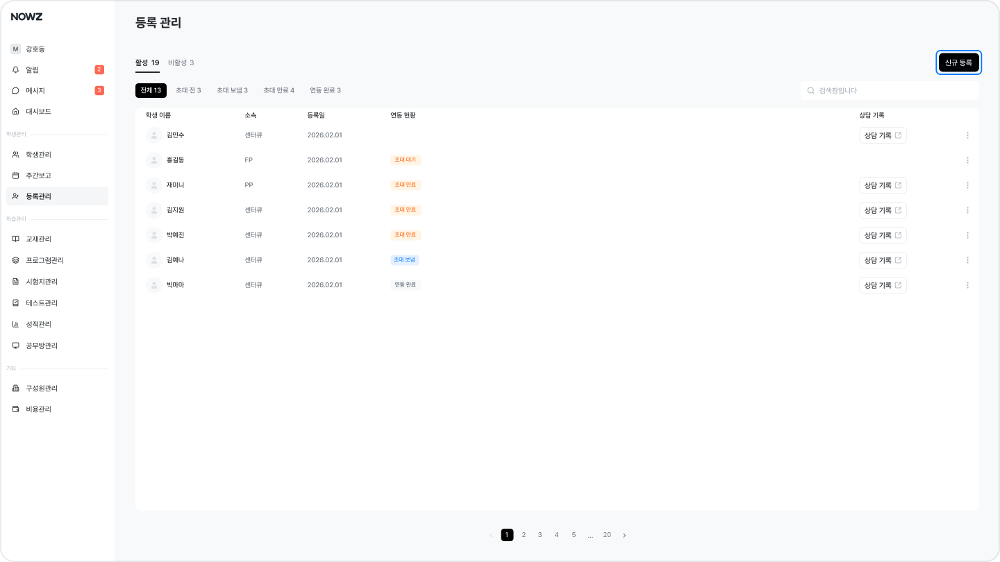
1. 우측 상단의 [신규 등록] 버튼을 클릭합니다.
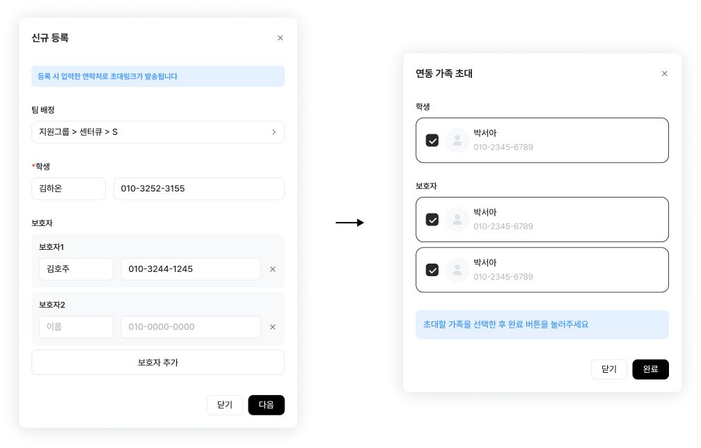
2. 정보를 입력한 후 서비스의 종류(케어Q, 센터Q)에 따라 서비스 연동 대상을 확인한 후 초대링크를 발송합니다.
참고학생의 정보로만 등록이 가능하나 일부 기능 사용이 제한될 수 있습니다.
등록 시 아래 경우에 해당하면 참고하세요.
학생이 앱을 사용하지 않는 경우 (학부모만 이용)▾
학생이 직접 앱을 사용하지 않고 학부모만 이용하는 경우입니다.
- 신규 등록 후 연동 가족 초대 화면으로 넘어갑니다.
- 학생(자녀)의 체크를 해제하고, 앱을 사용하는 사용자만 체크한 뒤 완료합니다.
자녀가 두 명 이상인 경우▾
NOWZ는 학생 단위로 관리하기 때문에, 자녀가 둘이면 한 명씩 각각 등록합니다. 이때 두 학생의 보호자 번호를 동일하게 입력하면 시스템이 같은 학부모의 자녀로 인식해, 학부모가 하나의 채팅방에서 두 자녀를 함께 관리·소통할 수 있습니다.
- 자녀 수만큼 학생을 각각 새로 등록합니다.
- 두 학생 모두 학생·보호자 번호를 동일하게 입력합니다.
연동현황 이해하기
| 연동 현황 | 노출 조건 |
|---|---|
| 미노출 | 등록 후 아무도 초대하지 않은 경우 또는 모든 구성원 초대를 취소하거나 연동해제를 한 경우 |
| 초대 만료 | 초대한 인원 중 1명이라도 초대가 만료된 경우 |
| 초대 보냄 | 1명 이상에게 초대를 보낸 경우 |
| 연동 완료 | 초대한 인원이 모두 연동된 경우 |
상담에서 등록
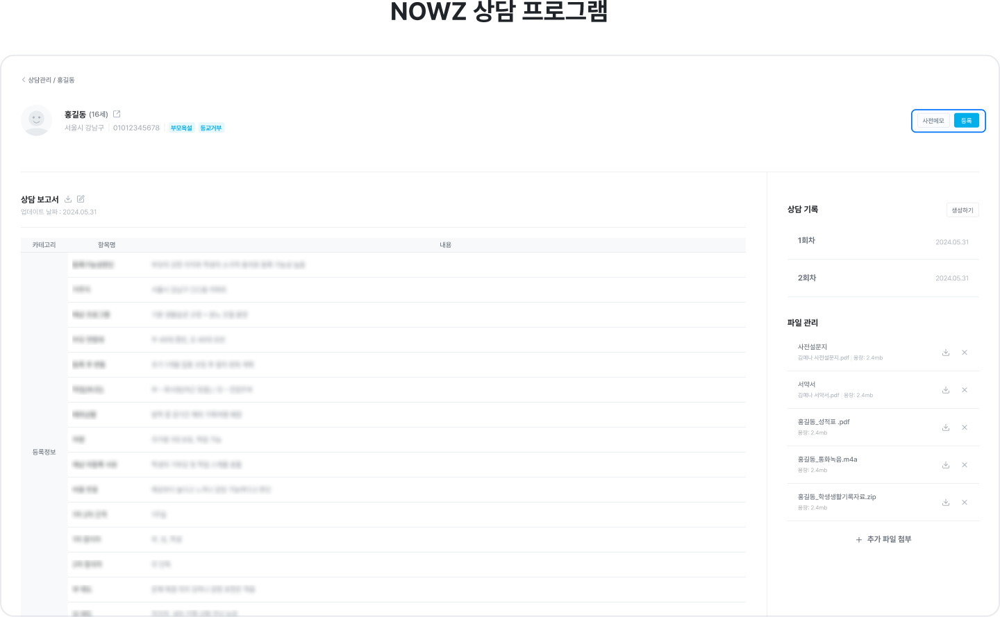
1. NOWZ 상담에서 학생 상담을 진행한 후 [등록 전환]을 누르면, 가족(학생·학부모) 정보와 상담 내역이 NOWZ 등록관리로 넘어옵니다. 목록에는 연동현황 ‘미노출’ 상태로 표시됩니다.
2. 등록관리 목록에서 학생(리스트)을 클릭합니다.
3. 가족 상세가 뜨면, 서비스 사용자에 맞게 초대를 발송합니다.
학생관리
등록된 학생을 한눈에 보고, 학생을 선택하면 그 학생의 모든 것을 관리하는 상세 화면으로 들어갑니다. 상세 화면은 프로필·생활·학습·상담·리포트 영역으로 나뉩니다.
학생 리스트
학생 리스트
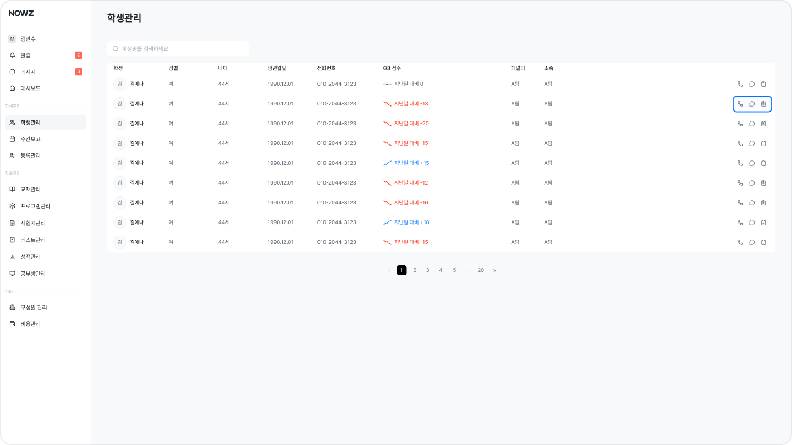
학생 리스트에서는 학생을 검색하고, 각 학생의 전화·메시지·행동기록 입력을 할 수 있습니다. 리스트에는 성별·나이·생년월일·전화번호·G3 점수(지난달 대비 증감)·소속·페널티가 함께 표시됩니다.
학생 프로필 카드
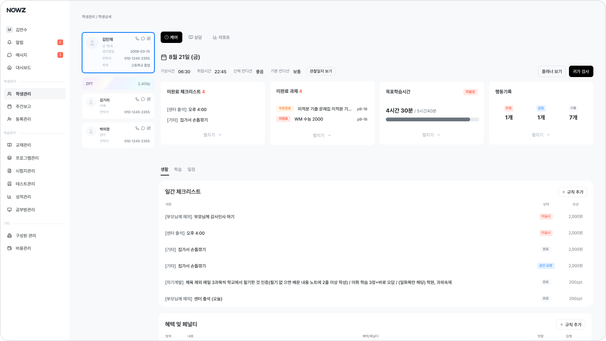
학생을 클릭하면 학생 상세 화면으로 들어갑니다. 좌측 프로필 카드의 오른쪽 위 아이콘에서 전화·메시지·학생 정보 관리를 할 수 있고, 미완료 체크리스트·미완료 과제 건수와 케어 상담 리포트를 한눈에 볼 수 있습니다.
전화와 메시지 사용
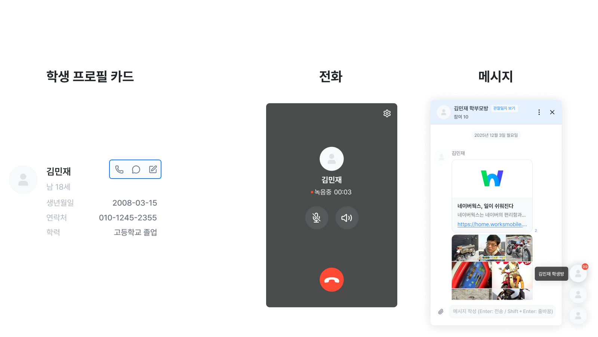
프로필 카드의 전화 아이콘 또는 메시지 아이콘을 누르면 학생과 다양한 방식으로 통신할 수 있어요. 전화와 메시지 모두 작은 웹 페이지 내의 플로팅 창으로 뜨기 때문에 다른 작업과 동시에 사용할 수 있어요.
학생 정보 관리
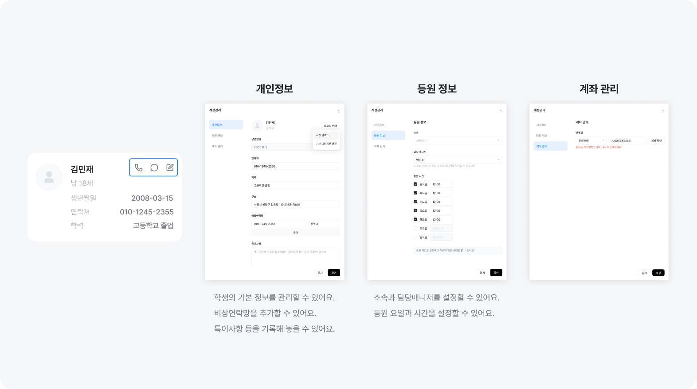
프로필 카드 가장 오른쪽 끝의 수정 버튼을 누르면 개인정보·등원정보·계좌관리를 할 수 있어요.
참고개인정보 — 학생의 기본 정보를 관리하고, 비상연락망을 추가하거나 특이사항을 기록할 수 있어요.
참고등원정보 — 소속과 담당 매니저를 설정하고 등원 요일·시간을 설정할 수 있어요. (등원 시간을 설정해야 학생의 등원 상태를 알 수 있어요.)
참고계좌관리 — 학생 용돈 계좌를 등록할 수 있어요.
ZPT 관리
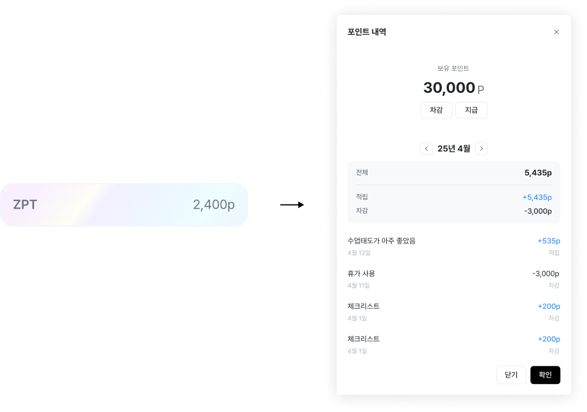
ZPT는 학생에게 보상으로 지급되는 포인트예요. 프로필 카드 하단의 ZPT 카드를 클릭하면 포인트 발급 내역을 볼 수 있고, 포인트 내역 화면에서 포인트를 직접 차감하거나 지급할 수 있습니다.
플래너 및 관찰일지
해당 영역의 날짜를 클릭하면 날짜를 이동하거나 관찰일지·플래너를 볼 수 있으며, 플래너 승인 또는 귀가검사를 할 수 있습니다.
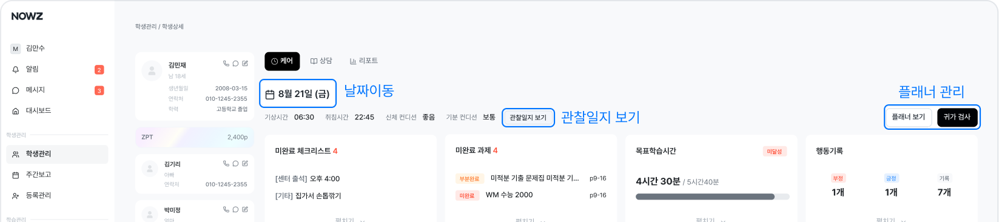
플래너 조회
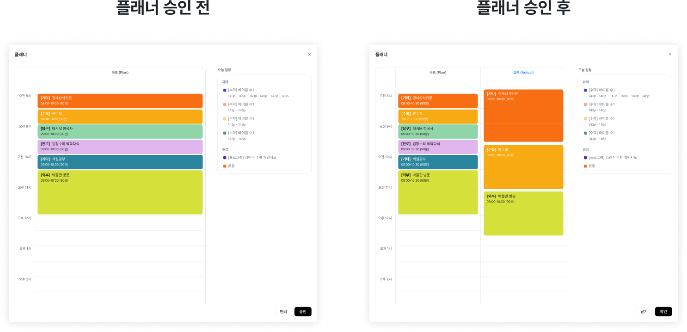
플래너 승인 전에는 학생의 오늘 계획을, 승인 후에는 계획과 비교할 수 있는 실제 하루 일정을 확인할 수 있어요.
학습에서 플래너를 생성할 수 없는 경우▾
학생이 학습 플래너를 사용하려면 교재 등록과 주간계획이 모두 준비되어 있어야 합니다. 둘 중 하나라도 빠지면 학생 앱 학습 탭에는 플래너 대신 ‘아직 플래너가 없어요’ 화면만 표시됩니다.
교재는 등록됐지만 주간계획이 없을 때는 ‘플래너 생성’ 버튼과 함께 ‘작성된 주간계획이 없습니다 · 매니저에게 요청해주세요’ 안내가 나타나고, 교재부터 등록되지 않았을 때는 별도 안내 없이 빈 화면만 보입니다.
관찰일지 조회
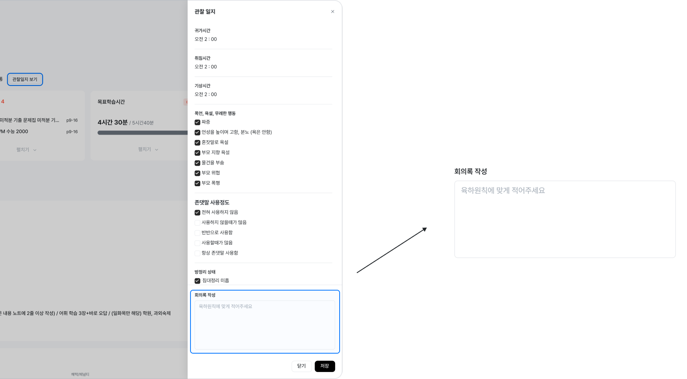
보호자가 학생의 전날 관찰일지를 업데이트하면, 매니저는 이 화면에서 보호자가 작성한 관찰일지를 확인할 수 있습니다. 화면을 보고 간단히 메모할 내용을 회의록에 작성하거나 매니징 방향을 적어 둘 수 있습니다.
생활 관리
학생 상세 화면에서 생활에 관련된 규칙을 생성할 수 있습니다. 매일 루틴화하여 생성하는 일간 체크리스트와, 그 수행률을 보조하는 장치인 혜택 및 페널티를 관리할 수 있습니다.
체크리스트 카테고리 이해하기
체크리스트는 카테고리별로 매니저가 설정하는 항목과 인증 지표가 다르며, 입력된 지표는 G3 리포트 점수 산출에 쓰입니다.
| 카테고리 | 매니저 설정 항목 | G3 산출방식 |
|---|---|---|
| 부모님께 예의 | 문자열 | 행동기록 |
| 준법정신 | 문자열 | 행동기록 |
| 취침 | 시각 | 체크리스트 |
| 기상 | 시각 | 체크리스트 |
| 외출 및 귀가 습관 | 시각 | 체크리스트 |
| 방 및 공간 정리 | 문자열 | 체크리스트 |
| 위생 및 청결 습관 | 횟수(샤워/양치) | 체크리스트 |
| 식사 습관 | 문자열 | 평가 |
| 휴대폰·인터넷 사용 | 시간 | 체크리스트 |
| 학교 출결 | 시각 | 체크리스트 |
| 센터 출석 | 시각 | 체크리스트 |
| 센터 체류시간 | 시간 | 자동 계산 |
| 대화 예절 습관 | 문자열 | 평가 |
| 감정 조절 | 문자열 | 평가 |
| 학습 시간 | 시간 | 자동 계산 |
| 자기 계발 | 문자열 | 평가 |
| 독서 | 문자열 | 평가 |
| 운동 | 문자열 | 체크리스트 |
| 기타 | 문자열 | — |
일간 체크리스트
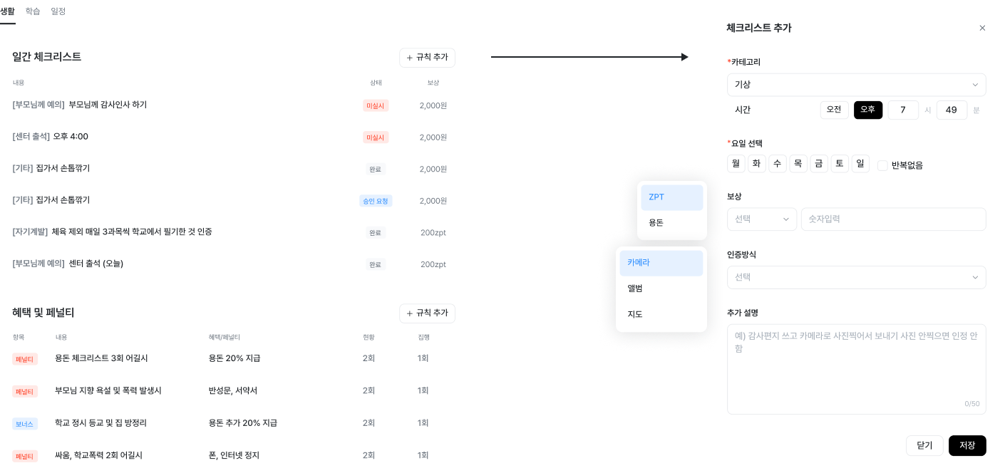
체크리스트를 추가하면 오른쪽에 입력 창이 뜹니다. 여기서 카테고리·시간·보상·인증방식을 설정해 매니징을 더 효과적으로 할 수 있습니다.
참고보상을 추가해서 학생의 체크리스트 달성률을 높여 봐요.
참고인증방식을 추가해서 학생의 체크리스트 인증도를 높여 봐요.
일간 체크리스트 승인
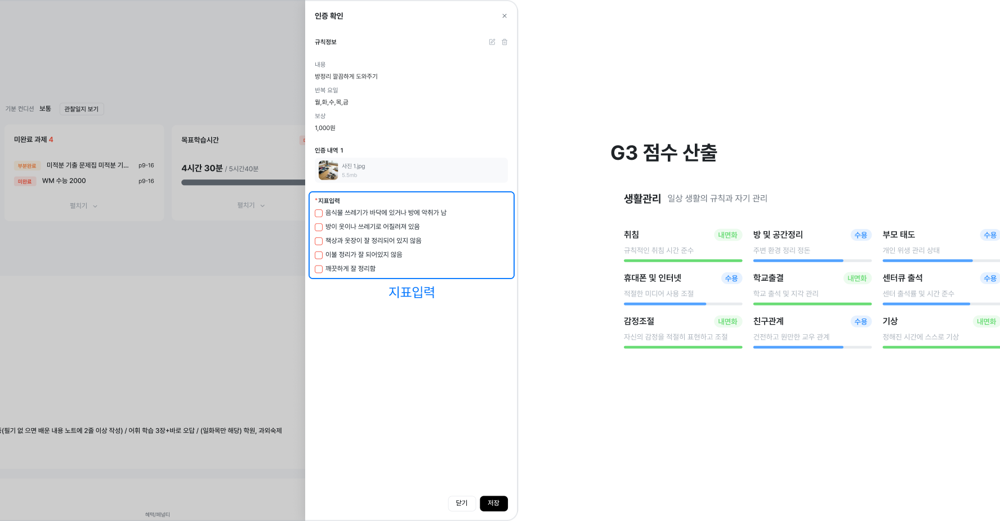
체크리스트 승인 시 입력하는 지표를 모아 학생의 G3 리포트 점수를 산출합니다.
혜택 및 페널티 규칙 추가
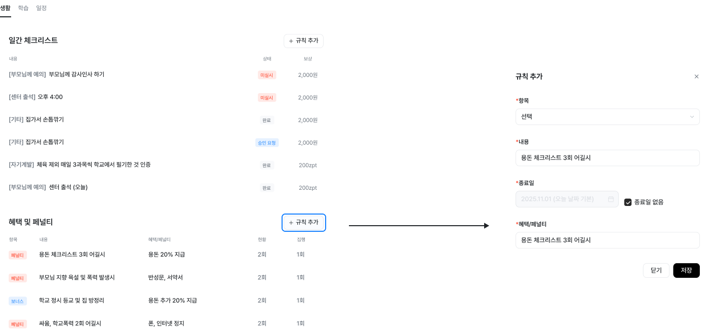
혜택 및 페널티 규칙을 생성해 체크리스트의 수행도를 높일 수 있습니다. 입력 항목은 다음과 같습니다.
참고항목 — 혜택 또는 페널티를 선택합니다.
참고내용 — 어떤 상황에서 적용되는지 텍스트로 적습니다. (예: 용돈 체크리스트 3회 어길 시)
참고종료일 — 규칙을 언제까지 유지할지 종료일을 선택합니다.
참고혜택/페널티 — 규칙을 지키거나 안 지키면 어떤 혜택/페널티를 적용하는지 적습니다.
혜택 및 페널티 규칙 관리
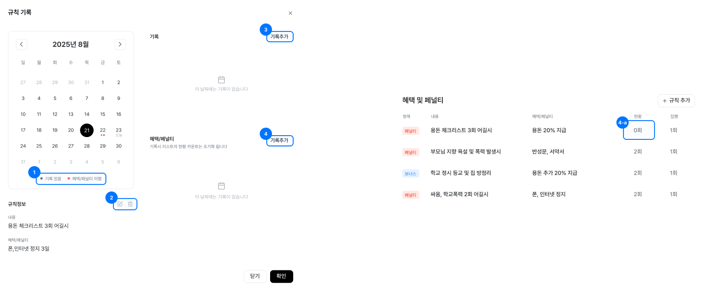
좌측 달력에서 기록과 집행된 내역을 확인할 수 있습니다. 규칙 자체를 수정하거나 삭제할 수 있고, 기록 추가로 규칙을 몇 회 지켰는지 확인할 수 있습니다. 정해진 기록 횟수를 초과하면 매니저 판단 하에 혜택/페널티를 집행할 수 있으며, 이행하면 리스트의 현황이 0회로 초기화되어 노출됩니다.
참고발생 횟수는 매니저가 직접 입력하며, 횟수가 찼다고 혜택/페널티가 자동 집행되지는 않습니다. 이행은 매니저가 별도로 기록합니다.
자녀가 앱을 사용하지 않을 때 (직접 체크 모드)▾
자녀가 앱을 사용하지 않는 경우, 학부모 앱에서 직접 체크 모드로 전환하면 일간 체크리스트와 혜택 및 페널티를 학부모가 가정에서 직접 관리할 수 있습니다.
- 학부모 앱에서 일반 모드 → 직접 체크 모드로 변경합니다.
- 오늘의 현황에서 일간 체크리스트·혜택 및 페널티를 학부모가 직접 체크합니다.
학습 관리
학습 시간
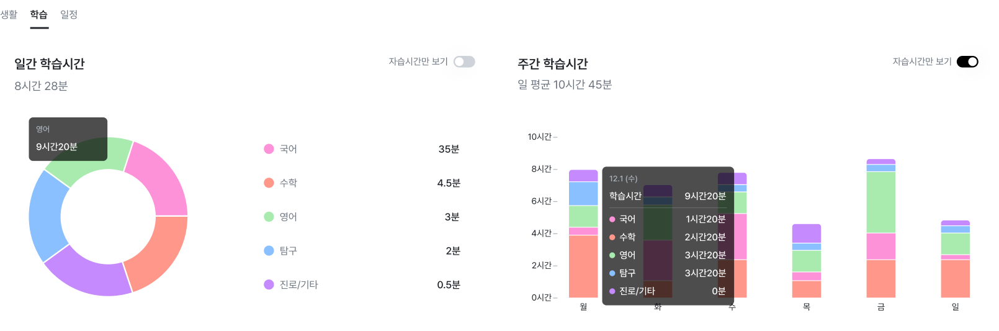
학습 탭에서 학생의 학습시간을 확인할 수 있습니다. 우측 상단의 ‘자습시간만 보기’를 켜면 프로그램·시험 시간을 제외한 실제 순공 시간만 볼 수 있습니다.
학습 일정
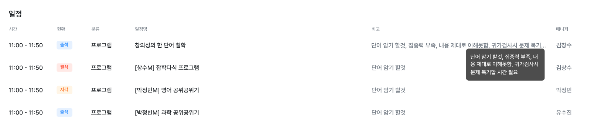
일정 카드에서 학생의 학습 일정을 확인할 수 있습니다. 프로그램과 프로그램 피드백을 함께 볼 수 있습니다.
오늘의 과제
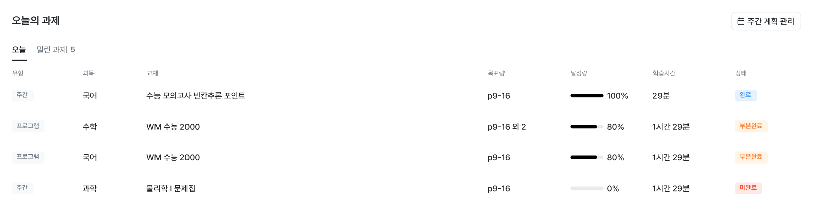
‘오늘의 과제’에서는 오늘 학생이 계획한 과제를, ‘밀린 과제’에서는 부분완료·미완료된 지난 과제를 확인할 수 있습니다.
주간 계획 관리
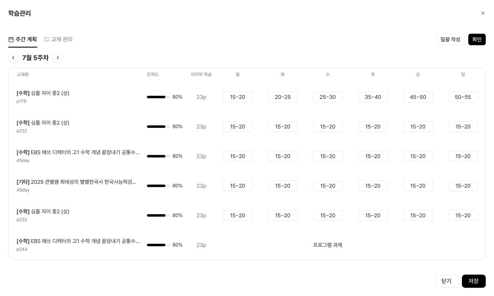
상단의 ‘주간계획 관리’ 버튼을 클릭하면 학생에게 과제를 내줄 수 있습니다. 프로그램 과제는 프로그램 내 학습관리 매니저가 내준 과제로, 리스트를 누르면 과제 기한과 범위를 확인할 수 있습니다. ‘주간 계획 일괄작성’에서 전체 페이지 수를 입력 후 저장하면 요일별로 자동 배분됩니다. ‘교재 관리’ 탭에서는 과제를 추가할 교재를 등록하며, 교재를 중단하거나 완료로 이동·추가할 수 있습니다.
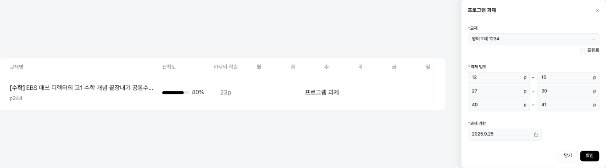
프로그램 과제 — 프로그램 내 학습관리 매니저가 내준 과제로, 리스트를 누르면 기한·범위를 확인할 수 있어요.
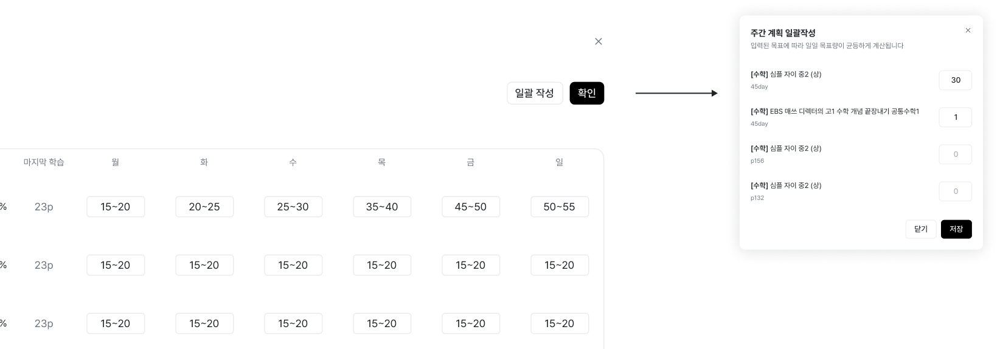
주간 계획 일괄작성 — 전체 페이지 수를 입력하면 요일별로 균등하게 자동 배분돼요.
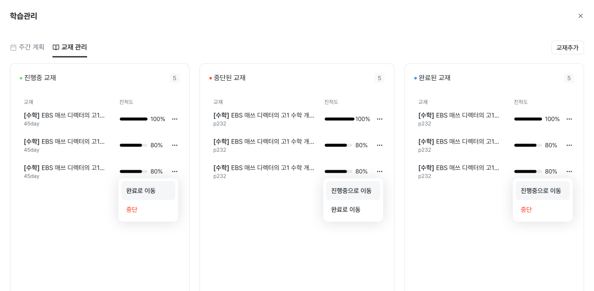
교재 관리 — 과제에 쓸 교재를 먼저 등록하고, 진행중·중단·완료로 옮길 수 있어요.
참고교재를 추가하기 전에 교재 관리 탭에서 교재를 먼저 등록해 주세요.
일정 관리
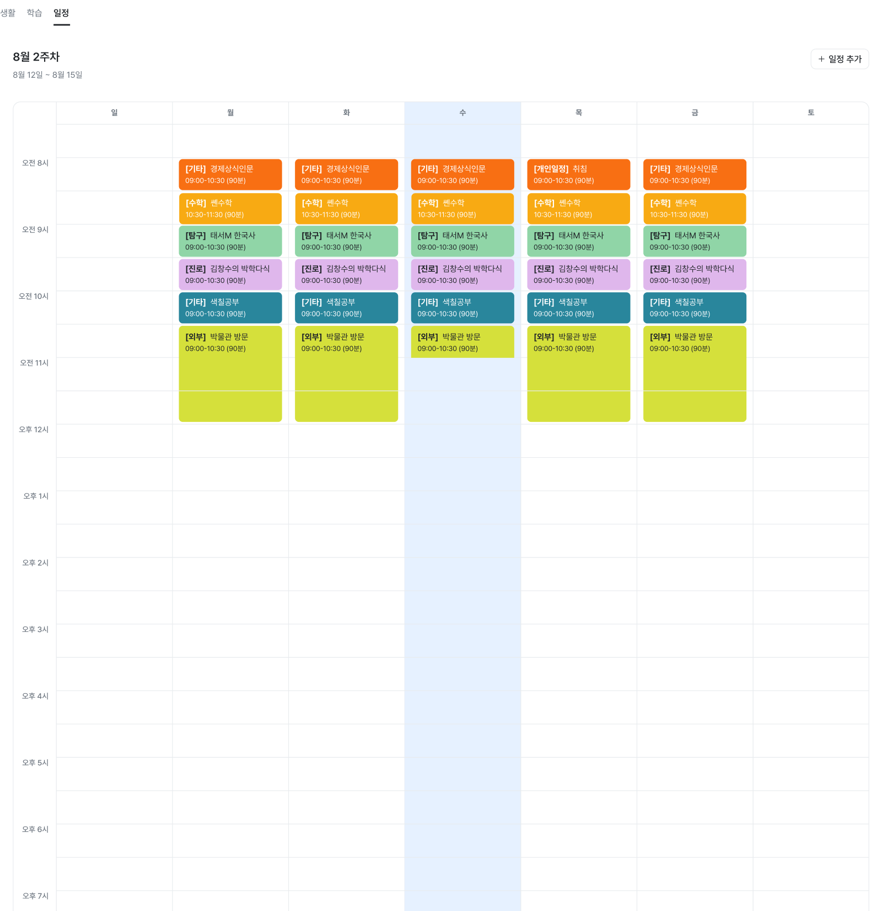
일정 탭에서 학생의 일정을 한 번에 볼 수 있고, 추가·삭제할 수 있습니다. 단, 프로그램이나 시험 일정은 이 화면이 아니라 프로그램 관리·시험 관리 화면에서 삭제합니다.
귀가검사
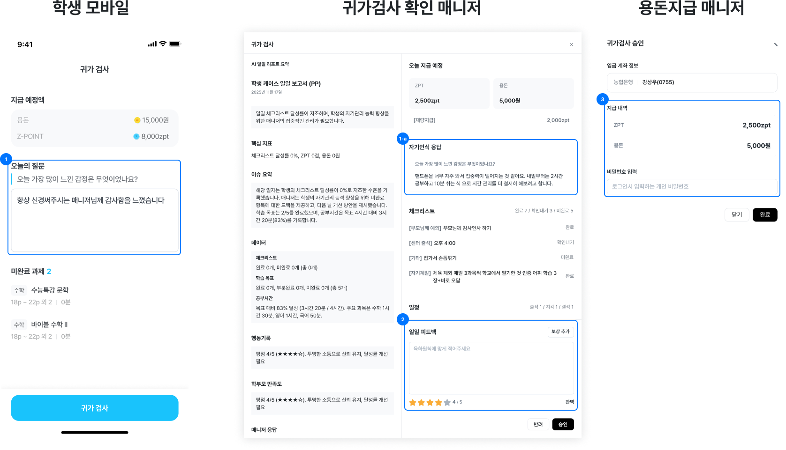
학생이 귀가검사 요청을 보내면 오늘의 질문에 응답하고, 응답 내용은 자기인식 응답에 노출됩니다. 매니저는 좌측 AI 일일 리포트 요약과 우측의 오늘 수행 내용을 보고 일일 피드백을 적으며, 이 과정에서 보상을 추가로 줄 수 있습니다. 피드백 작성·승인 후 학생에게 지급되는 총 보상을 확인하고 완료하면 자동 송금됩니다.
학생 상담
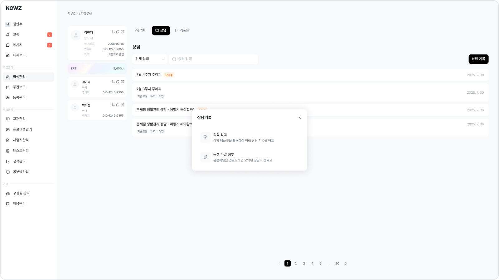
학생 상담은 학생 상세의 상담 탭에서 기록할 수 있습니다. 오른쪽 위 '상담 기록' 버튼을 누르면 기록 방식(직접 입력/음성 첨부)을 선택하는 창이 뜹니다. 음성 파일을 첨부하면 바로 상담이 생성되고, 요약이 끝나면 확인할 수 있습니다. 음성 파일로 생성된 스크립트는 수정할 수 있습니다.
리포트
리포트는 생활·학습·G3 탭으로 나뉘며, 상단에서 기간을 조정해 최근 동향을 확인할 수 있습니다.
생활
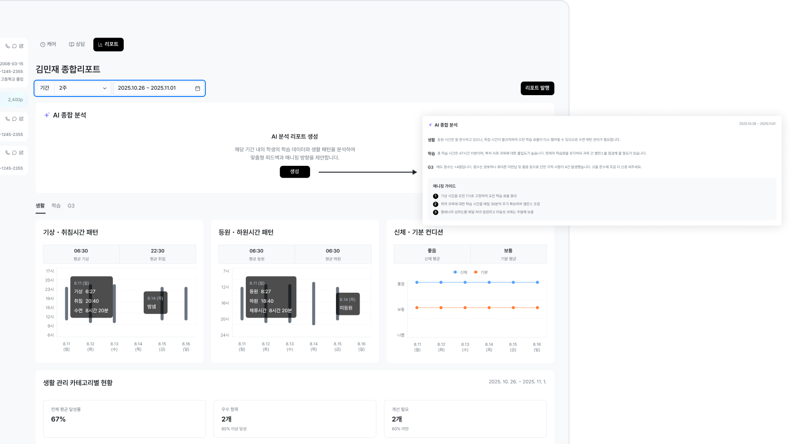
생활 탭에서는 생활 관련 내용을 조회합니다. AI 분석 리포트를 생성하면 학생의 생활 요약과 매니징 가이드를 확인할 수 있습니다.
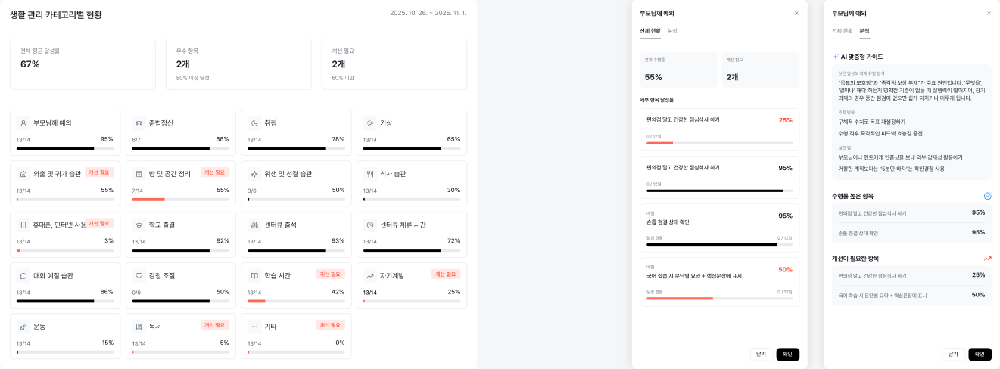
참고하단 ‘생활 관리 카테고리별 현황’에서 각 카테고리별 상세를 보고, 같은 카테고리 내 어떤 체크리스트의 수행률이 낮은지 확인하고 맞춤형 가이드로 개선 팁을 얻을 수 있습니다.
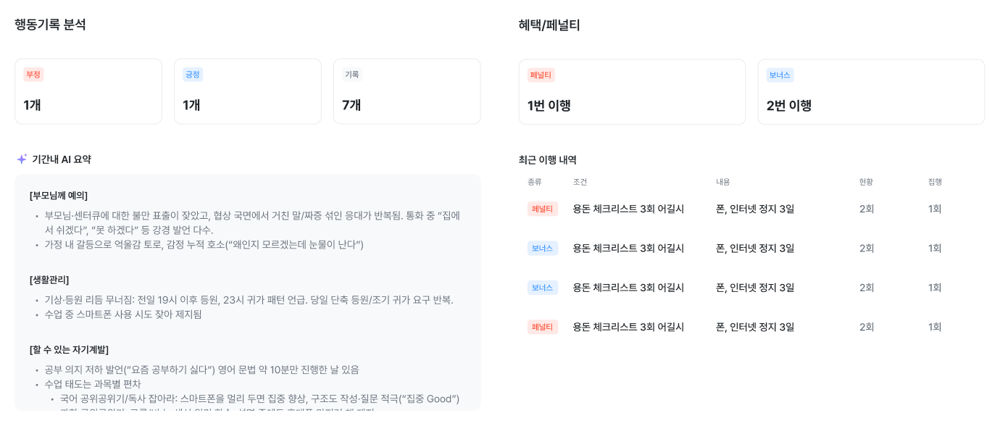
참고하단 ‘행동기록 분석’은 기간 내 행동기록을 분석해 보여 주며, ‘혜택/페널티’는 최근 이행 내역에서 규칙을 어긴 횟수와 집행 횟수를 확인할 수 있습니다.
학습
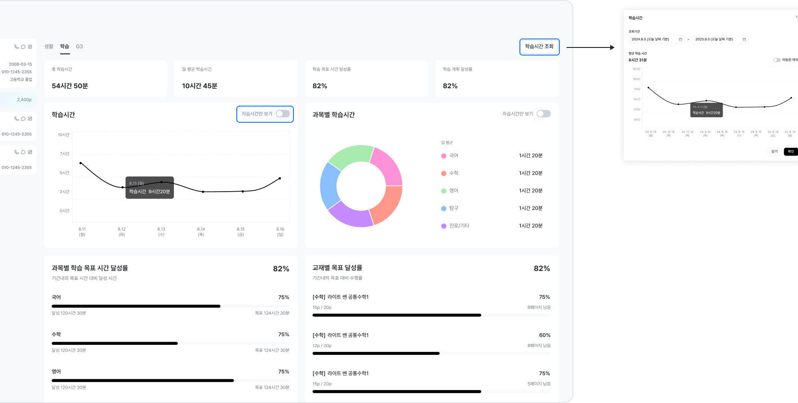
학습 탭에서는 학습 관련 내용을 조회합니다. 생활 탭과 동일하게 상단 기간을 조정할 수 있고, 우측 상단의 ‘학습시간 조회’ 버튼으로 전체 기간을 설정해 공부시간을 확인할 수 있습니다. 학습시간은 프로그램·시험 시간을 제외한 자습시간만 확인합니다.
G3
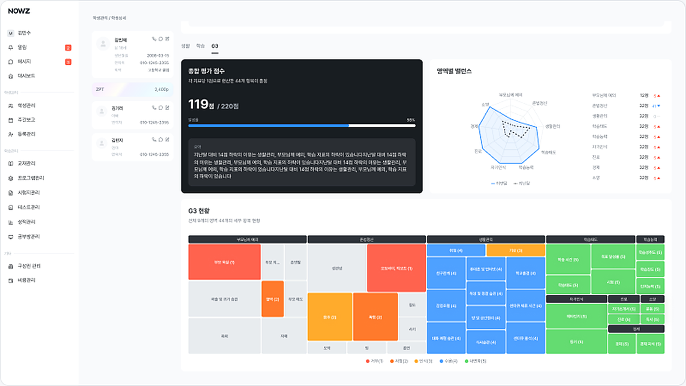
G3 탭에서는 월별 지표당 점수와 지표 변동 추이를 확인합니다. 종합 평가 점수는 44개 항목을 5점으로 환산해 측정하며, 영역별 밸런스로 지난달 추이와 부족한 지표를 확인할 수 있습니다. 하단 G3 현황에서는 9개 영역 44개 지표의 분포를 트리맵으로 한눈에 볼 수 있습니다.
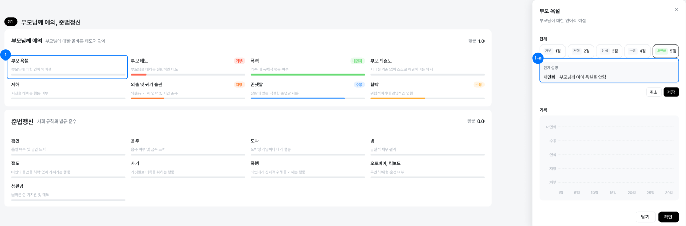
참고하단 상세 내역에서는 데이터가 없는 지표를 직접 채울 수 있습니다. (카테고리 클릭 → 단계 설명 확인 → 지표 입력 완성)
G3 기간별 추이
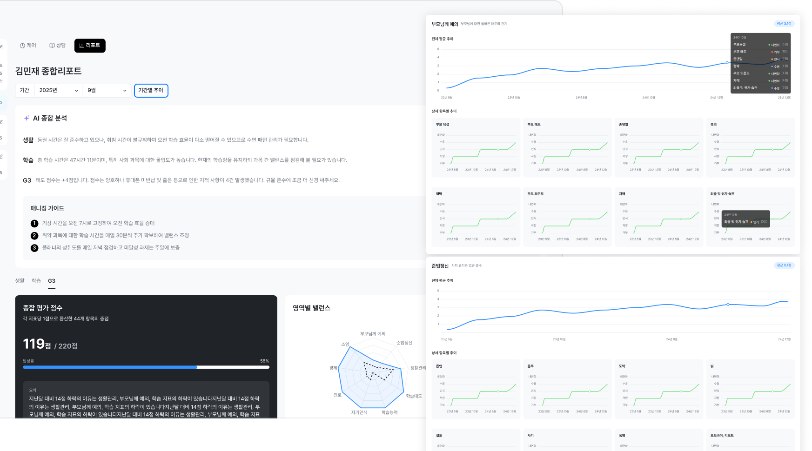
‘기간별 추이’를 클릭하면 G3 지표의 추이를 볼 수 있습니다.
리포트 발행
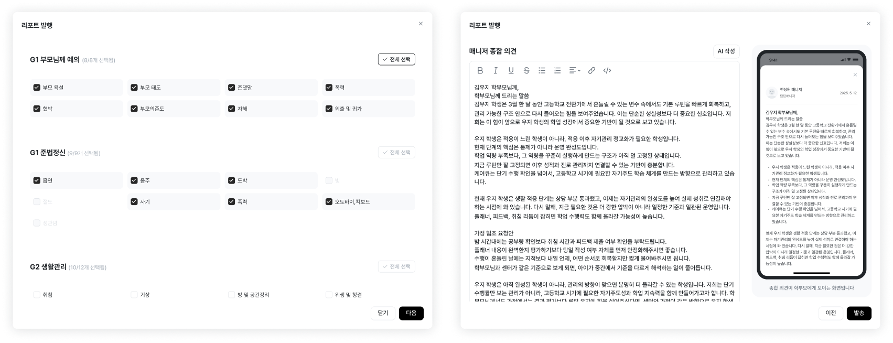
리포트 발행 시 G3 지표를 선택해 발송할 수 있으며 매니저 소견을 입력할 수 있습니다. 매니저 종합 의견은 학부모에게 보이는 화면입니다.
참고주 단위 생활/학습 리포트는 매주 월요일 자동 발송되고, 월 단위 생활/학습/G3 리포트는 매월 매니저가 발송합니다.
대시보드
하루 업무를 한 화면에서 처리하는 곳입니다. 여섯 가지 영역으로 나뉩니다.
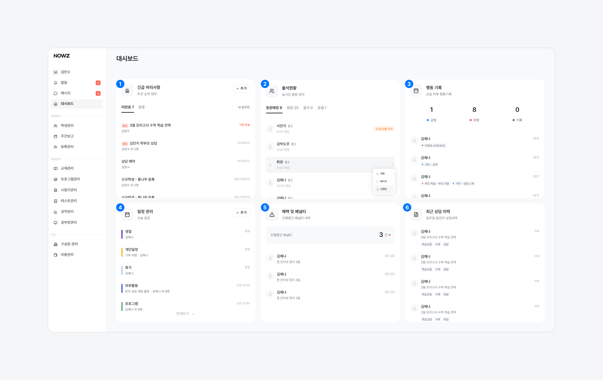
- 긴급 처리사항 — 우선 처리가 필요한 업무를 모아 봅니다. 미완료·완료 탭으로 상태를 구분하고, ‘내 업무만’ 필터로 본인 담당만 볼 수 있습니다. 기한이 지난 업무는 빨간색으로 표시됩니다.
- 출석현황 — 등원예정·등원·결석·공결 현황을 실시간으로 확인합니다. 지각 중인 학생은 지각 시간이 함께 표시됩니다. 학생 이름 옆 메뉴에서 전화·메시지·출석 코멘트를 바로 보낼 수 있습니다.
- 행동 기록 — 오늘 등록된 행동기록을 긍정·부정·기록 건수로 요약합니다. 아래에 학생별 기록 내역이 최신순으로 표시됩니다.
- 일정 관리 — 오늘의 일정을 확인하고 추가합니다. 생일·개인일정·휴가·외부활동·프로그램 등이 표시되며, ‘전체보기’를 누르면 캘린더 뷰로 전환됩니다.
- 혜택 및 페널티 — 현재 진행 중인 혜택·페널티 건수와 대상 학생, 남은 기간을 확인합니다.
- 최근 상담 이력 — 일주일간의 상담 내역을 최신순으로 봅니다. 학생 이름과 상담 주제가 표시됩니다.
메시지
메시지 파일 관리
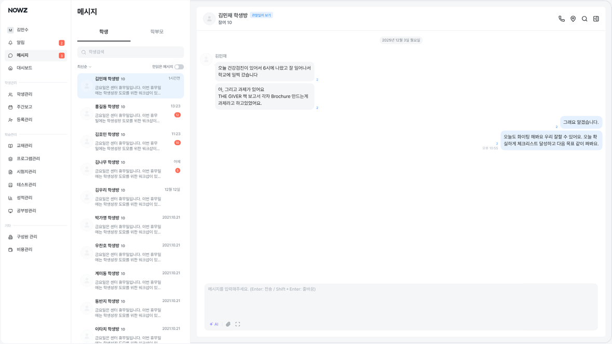
우상단의 클립 아이콘을 누르게 되면 주고 받은 파일을 확인할 수 있습니다.
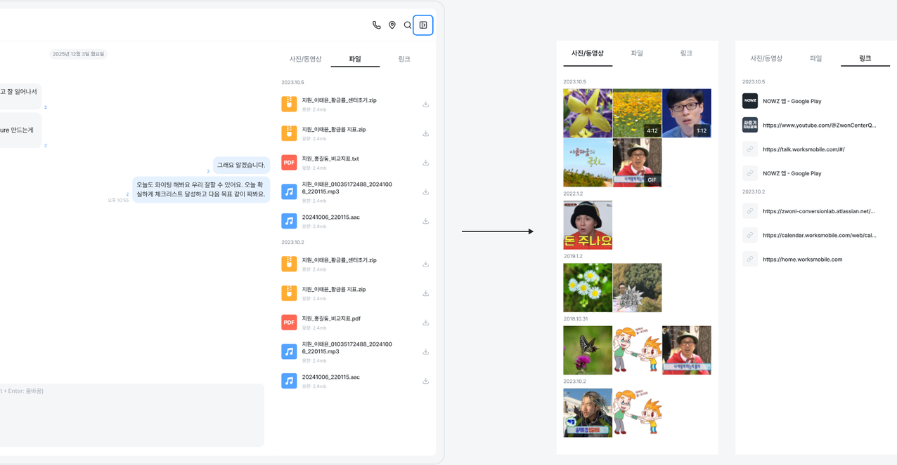
우상단의 클립을 확장하게 되면 대화 시 주고 받은 사진/동영상, 파일, 링크 등을 확인할 수 있습니다.
메시지 검색
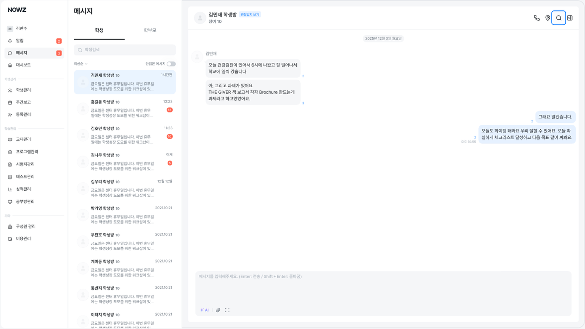
우측상단의 검색 아이콘을 누르면 과거 메시지를 검색할 수 있습니다.
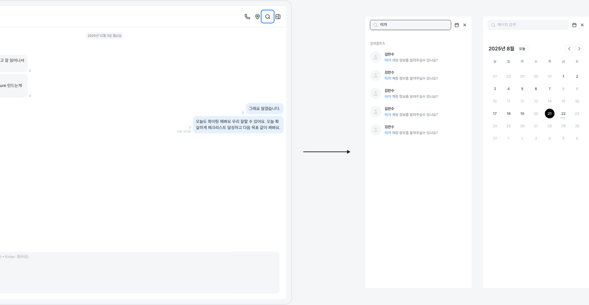
메시지 내용을 검색하거나 달력으로 메시지를 조회할 수 있습니다.
메시지 관찰일지 조회
상단의 관찰일지 보기를 누르게 되면 학생의 관찰일지를 볼 수 있습니다.
전화 기능 사용
학생 또는 학부모와 전화를 할 수 있습니다.
AI 기능
하단의 AI버튼을 누르면 새로운 기능을 사용할 수 있습니다.
매뉴얼 기반의 응대찾기
- 학생과 나눈 대화 중 응대에 어려움이 있는 부분을 캡쳐하여 확인 버튼을 클릭합니다.
- 추천 메시지를 확인하고 메시지의 톤을 선택합니다.
- 내용을 복사하여 전송할 수 있습니다.
학생 히스토리 묻기
학생 상태 혹은 대화 내용의 흐름을 인지하지 못했을때 질문을 하면 그에 대한 응답을 받을 수 있습니다.
주간보고
주간보고 리스트
- 체크리스트: 상단의 기간동안의 체크리스트 수행 현황을 보여줍니다.
- 과제: 상단의 기간동안의 과제 수행 현황을 보여줍니다.
- 학습추이: 상단의 기간과 그 전 주차의 학습 추이 비교를 보여줍니다.
- 이탈 위험도: 상단의 기간동안 ‘고위험 이탈 케이스 대응’의 내용을 바탕으로 데이터를 분석해 이탈 위험도를 유추하여 보여줍니다.
- 피드백: 주간보고서를 작성한 매니저가 작성 시 피드백 여부를 클릭하면 상급자가 확인을 할 수 있도록 보여줍니다.
주간보고 작성
- 주간보고서 작성 시 AI 자동 작성을 할 수 있습니다.
- 하단 댓글 컨텐츠 우측에 피드백 버튼을 클릭하면 리스트에서 확인할 수 있습니다.
교재 관리
교재 리스트
- 과제, 프로그램 등을 운영하기 위해서는 교재관리에 교재가 등록되어 있어야 합니다.
- 우측의 ‘교재 등록’을 통해 새로운 교재를 등록할 수 있습니다.
- 등록한 교재는 수정하거나 삭제할 수 있습니다.
교재 등록
필수 항목들을 기입 후 등록하면 해당 교재를 프로그램, 학생 교재추가 등 다양한 곳에 교재를 추가할 수 있습니다.
프로그램 관리
프로그램 등록
- 과제, 프로그램 등을 운영하기 위해서는 교재관리에 교재가 등록되어 있어야 합니다.
- 우측의 교재 등록을 통해 새로운 교재를 등록할 수 있습니다.
필수 항목들을 기입 후 등록하면 해당 프로그램을 진행할 수 있습니다.
프로그램 상세
생성된 프로그램으로 들어오면 회차 기록을 추가하거나 수강생을 관리할 수 있습니다.
- 프로그램을 수정하거나 삭제할 수 있습니다.
- 수강 학생을 추가하거나 삭제할 수 있습니다.
- 과제가 부여된 날의 프로그램은 리스트에 노출해줍니다.
프로그램 진행
상단의 기록 추가를 누르면 프로그램을 진행할 수 있습니다.
학생 개별 출석처리가 가능하며 리스트 가장 왼쪽에 있는 체크박스 컬럼을 클릭하여 활성화되면 학생들을 일괄 출석 처리할 수 있습니다.
- 프로그램이 진행되는 도중에는 학생의 출석 시간을 수정하거나 프로그램에 관련된 코멘트를 입력할 수 있습니다.
- 코멘트의 경우 지각/지각(사전승인)/불참/불참(사전승인)은 출석 관리에서 기록을 하였더라도 코멘트에 기록해야합니다.
- 비고란에 해당 학생의 수업에 대한 피드백을 적습니다.
- 수업완료 후 리스트 상단의 수업완료 버튼을 클릭하여 프로그램 진행 시간을 확인합니다.
- 학생의 개별 출석 시간을 수정할 수 있습니다. 프로그램 시간이 10:00 - 11:00 까지로 설정되어 있으면 해당 10:00 - 11:00 범위 밖의 설정은 불가합니다.
- 수업이 완료되면 우측의 컬럼을 통해 수업파일, 자료를 업로드하거나 과제를 부여할 수 있습니다.
- 과제의 경우 여러 범위를 지정하거나 특정 학생에게만 부여할 수 있습니다.
수업 완료 후 우측 상단의 메뉴를 클릭하여 회차 수정 또는 학생 리스트 우측 상단의 수정 버튼을 클릭하여 수정할 수 있습니다.
시험지 관리
시험지 등록
우측 상단의 시험지 등록 버튼을 클릭하면 시험지를 등록할 수 있습니다. 시험지 관리에서 등록된 시험지를 통해 테스트 관리를 할 수 있습니다.
학년/회차(년/월)/주관사가 동일한 시험지는 그룹으로 자동 분류됩니다.
문제지와 해설을 업로드 후 분석 보기 버튼을 눌러 답지를 입력하고 상세 과목의 정보를 입력합니다.
테스트 생성
- 시험지가 1개라도 등록이 된다면 해당 페이지에서 테스트를 직접 생성할 수 있습니다.
- 테스트를 만든 후에는 테스트 관리 페이지에서 추가로 시험지를 등록할 수 있습니다.
테스트 관리
테스트 리스트
- 테스트 리스트에서는 다양한 정보를 확인할 수 있습니다.
- 외부 기관에서 시험을 본 경우 위와 같이 태그가 노출됩니다.
- 시험지가 미등록된 경우 추후 시험지를 등록할 수 있도록 태그가 노출됩니다.
- 테스트의 상태가 기록중인 경우는 학생이 아직 답안을 작성하지 않은 상태를 말합니다.
테스트 생성
- 필수 정보를 입력하면 테스트를 생성할 수 있습니다.
- 외부기관 진행의 경우 센터 자체적인 테스트 관리 감독이 아니라 외부 위탁 관리 감독의 경우를 말합니다.
테스트 관리
응시학생의 출석 여부를 입력 후 우측 상단의 테스트 시작 버튼을 눌러 테스트를 진행합니다.
시험지 추가
시험지가 없는 경우 시험지를 추가할 수 있습니다.
- 시험지 관리에 등록된 시험지를 검색하여 등록할 수 있습니다.
- 해당 페이지에서 직접 시험지를 업로드 하여 시험지 관리에 등록이 가능합니다.
- 테스트 관리의 시험지를 등록할 때 각 과목에 맞게 시험지를 추가하여야 합니다.
- 테스트 관리의 시험지를 등록할 때 하나의 테스트에서 회차와 주관사는 반드시 동일해야 합니다.
코멘트 입력
비고의 점 세 개(⋮) 아이콘에서 '코멘트 입력'을 누르면 이 창이 뜹니다. 학생 시험 중에도 행동기록을 입력할 수 있습니다.
학생 시간 수정
비고의 점 세 개(⋮) 아이콘에서 '시간 수정'을 누르면 이 창이 뜹니다. 학생의 개별 출석 시간을 수정할 수 있습니다. 테스트 시간이 10:00 - 11:00 까지로 설정되어 있으면 해당 10:00 - 11:00 범위 밖의 설정은 불가합니다.
피드백 입력
테스트가 진행되는 중에도 피드백을 입력할 수 있습니다.
학생 점수 입력 현황
테스트가 모두 마무리가 된 이후에 학생은 모바일에서 시험지 복기를 하게 됩니다.
비고의 점 세 개(⋮) 아이콘에서 '점수 입력 현황'을 누르면 이 창이 뜹니다.
- 학생이 입력한 정보를 점수 입력현황에서 확인 가능하며 수정할 수 있습니다.
- 선택과목을 선택 후 점수입력현황에서 등급을 입력하면 학생의 성적관리를 할 수 있습니다.
성적 관리
시험별 보기
성적관리 상단 '시험별 보기' 탭에서는 학생의 테스트 결과를 종합해서 볼 수 있습니다. 목록에서 시험을 클릭하면 상세페이지가 열립니다.
시험별 보기 목록에서 시험을 클릭하면 이 상세페이지가 열립니다. 응시학생 목록에서 학생을 클릭하면 개인 점수표 팝업이 뜹니다.
학생별 보기
상단 '학생별 보기' 탭을 누르면 성적을 학생별로도 확인할 수 있습니다.
학생을 클릭하면 학생의 성적 추이를 한눈에 확인 가능합니다. 오른쪽 위 '표준점수로 보기' 토글을 켜면 점수가 표준점수 기준으로 전환되어 표시됩니다.
공부방 관리
공부방 관리
학생이 모바일에서 과제 수행 시 공부방에서 관리할 수 있습니다.
- 일시정지: 진행 중인 학생의 학습 시간을 멈춥니다.
- 재개: 멈춘 시간을 다시 시작합니다.
- 완료 승인 요청: 오른쪽 영역에 학생이 보낸 시간 기록 요청이 쌓입니다.
완료 승인 요청
오른쪽 '완료 승인 요청' 영역에는 학생이 보낸 시간 기록 요청이 쌓입니다. 요청 리스트를 누르면 '시간 기록 요청 확인' 창이 뜨고, 기록 내용을 확인한 뒤 승인 또는 반려할 수 있습니다. 승인하면 그 시간이 학생 기록에 반영됩니다.
비용 관리
날짜 조회
비용 관리에서 상단의 날짜를 클릭하면 다른 날 데이터를 조회할 수 있습니다.
예치금 잔액 확인
예치금 잔액을 확인할 수 있습니다. 잔액 숫자 바로 옆의 새로고침 아이콘을 누르면 예치금 잔액을 업데이트할 수 있습니다.
송금
예치금 잔액 칸 오른쪽 아래에 있는 송금 버튼을 누르면 학생계좌 또는 학생의 요청지로 입금을 할 수 있습니다.
- 학생 계좌 송금: 학생을 선택하면, 그 학생의 개인정보에 입력해 둔 계좌로 송금됩니다.
- 학생 요청지 송금: '계좌입력'을 체크하고 은행·계좌를 입력하면 학생이 요청한 곳으로 송금되며, 선택된 학생에게 비용이 청구됩니다.
카드 내역 추가
지급 내역 우측 하단의 추가 버튼을 누르면 카드 사용 내역을 추가할 수 있습니다.
- 필수 항목을 입력 후 저장하면 비용 처리 내역에 추가 됩니다.
- 학생이 여러 명인 경우 1/N 처리를 하거나 각 학생들 사용 금액에 맞게 금액을 추가할 수 있습니다.
학생별 금액 조회
상단 '학생별 현황' 탭에서 기간별 학생 현황을 조회할 수 있습니다. 학생 이름을 클릭하면 상세 화면으로 이동합니다.
학생의 상세 화면에서는 상세 내역을 확인할 수 있습니다.